Soft
— пространство для развития и обмена опытом
- Тип
- Роль
- UX/UI-дизайнер
- Год
- 2024–2025
- Figma
- Открыть макеты
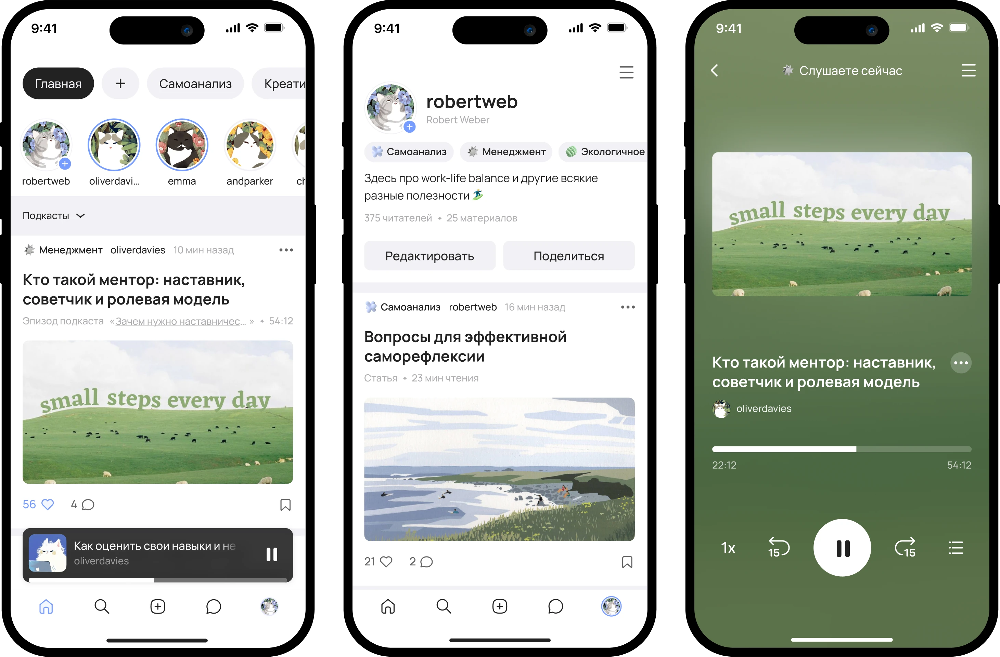
О проекте
Soft — концепция мобильного приложения для развития гибких навыков. Пользователи могут изучать статьи, видео и подкасты по тематическим категориям, а также делиться собственными знаниями.
Предпосылки
Идея Soft появилась из интереса к взаимодействию между людьми и усталости от бесконечного потока контента. Хотелось представить более спокойное пространство для изучения тем, связанных с личным и профессиональным развитием.
Исследование
Для начала нужно было понять: а как сейчас люди развивают гибкие навыки? Где находят полезные материалы? Как делятся собственным опытом? Для этого я изучила существующие платформы с тематическим контентом и пообщалась с потенциальными пользователями.
Наблюдения
Разные площадки
Статьи, видео и подкасты о личном и профессиональном развитии размещены на разных платформах — от медиа до Telegram-каналов.
Информационный шум
На универсальных платформах публикации о развитии конкурируют за внимание с новостями, развлечениями и другими темами.
Заметки с интервью
Александра, 26 лет — менеджер проектов
Три года в профессии, сейчас в поиске работы (на позицию лида). Понимает, что технических навыков уже недостаточно — нужно уметь договариваться, давать обратную связь, управлять конфликтами. Ищет контент по саморазвитию, но он разбросан по YouTube, телеграм-каналам, vc.ru.
«Я знаю что надо развиваться, но не понимаю что именно качать прямо сейчас. Читаю, смотрю, но все в разных местах. Часто отвлекаюсь на совершенно другие темы из рекомендаций.»
Илья, 31 год — Senior разработчик, тимлид
Технически сильный. Когда начинал, часто сомневался в своих решениях, чувствовал себя неуверенно. Но уже накопил реальный опыт управления командой — думал о блоге, но не знает с чего начать и считает, что «недостаточно эксперт».
«Чтобы вести какой-то блог надо регулярно что-то выкладывать, а то алгоритмы тебя похоронят. Я так долго не смогу. Плюс, не знаю, кому интересен мой опыт»
Светлана, 38 лет — HR
15 лет в профессии. Устала от вечного достигаторства и глянцевого контента с «5 шагами к успеху». Хочет находить живые практические истории и создавать что-то самой — без давления и гонки за охватами.
«Хотелось бы делиться чем-то с небольшим коммьюнити, возможно с людьми именно по моей специальности.»
«Была попытка ведения телеграм канала, писала посты на тему публичных выступлений и подобного, но охваты упали. Да и вечно теряются эти каналы среди других чатов.»
Инсайты
Информационный шум
Пользователи отвлекаются и теряют полезный контент среди множества платформ, лент и рабочих чатов
Давление алгоритмов
Необходимость постоянно публиковать контент, чтобы оставаться в поле зрения подписчиков, может отбивать желание вести блог
Запрос на спокойную среду
Пользователи устали от культуры достигаторства и ищут более камерное пространство
Проектирование
Структура тем
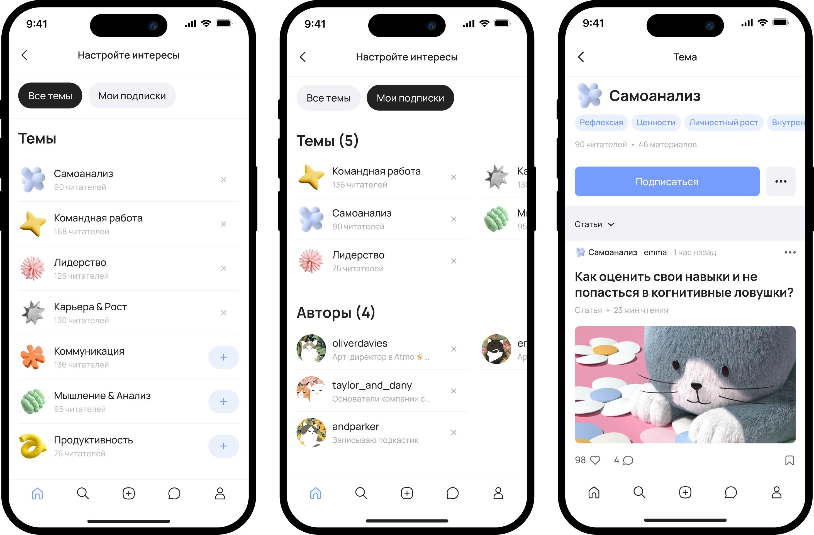
Почему так, а не иначе
UX-гигиена
Изначально я рассматривала 10–12 категорий, но при проектировании заметила пересечения между темами и перегруженность интерфейса. Я объединила близкие категории в семь более широких направлений.
Контентные хабы
Например, Креативность стала логичным продолжением Мышления (как навык поиска нестандартных решений), а Самоанализ и Осознанность сформировали понятный блок Ментального здоровья.
Основные сценарии
Читатель
- Находит интересующую тему
- выбирает формат
- читает или слушает материал
- сохраняет полезное или подписывается на тему/автора
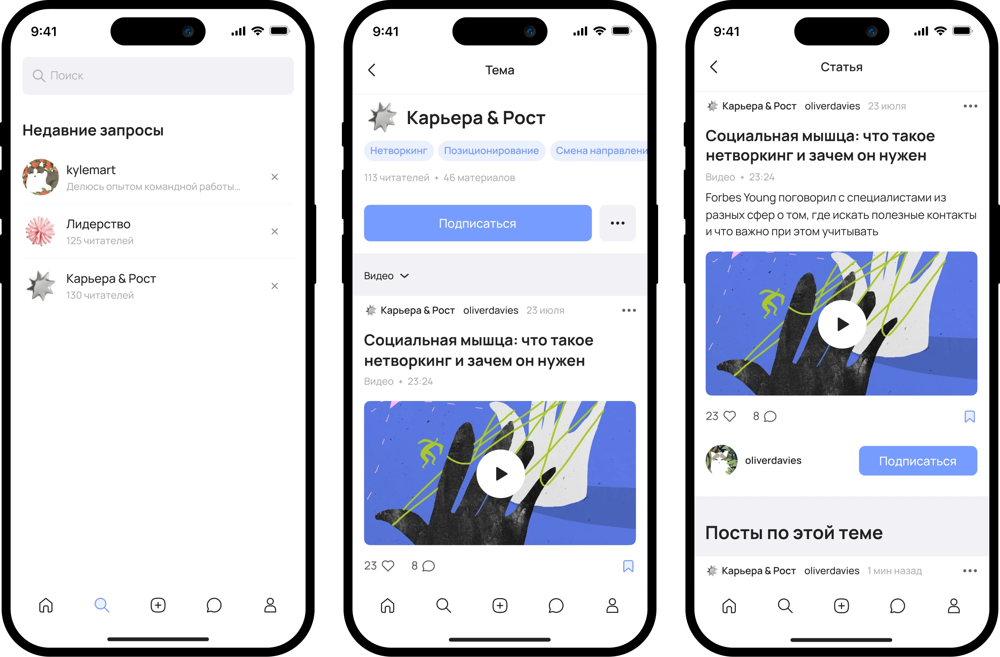
Автор
- Создаёт публикацию
- выбирает тему
- публикует материал
- получает обратную связь от сообщества
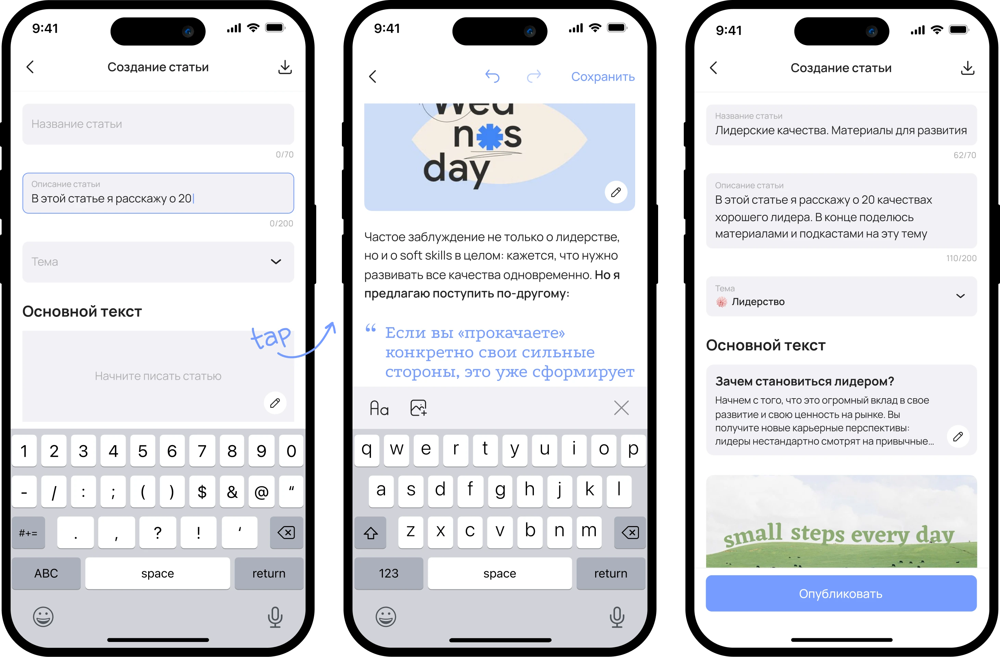
Дизайн-решения
Потеря фокуса в перегруженных лентах, легко отвлечься на развлекательный контент.
Отдельные хабы помогут быстрее находить релевантные материалы и дольше оставаться в контексте темы.
Набор тем, возможность подписки как на отдельного автора, так и на всю тему целиком. Так читателю может быть легче изучать только то, что нужно сейчас.
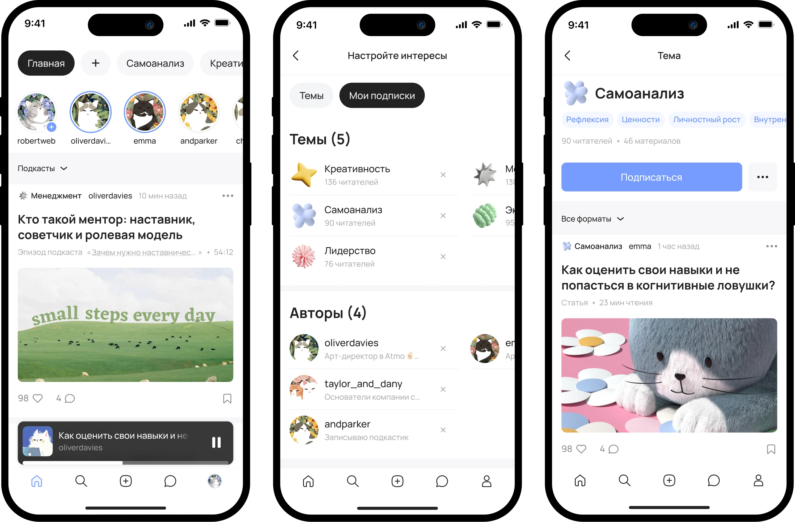
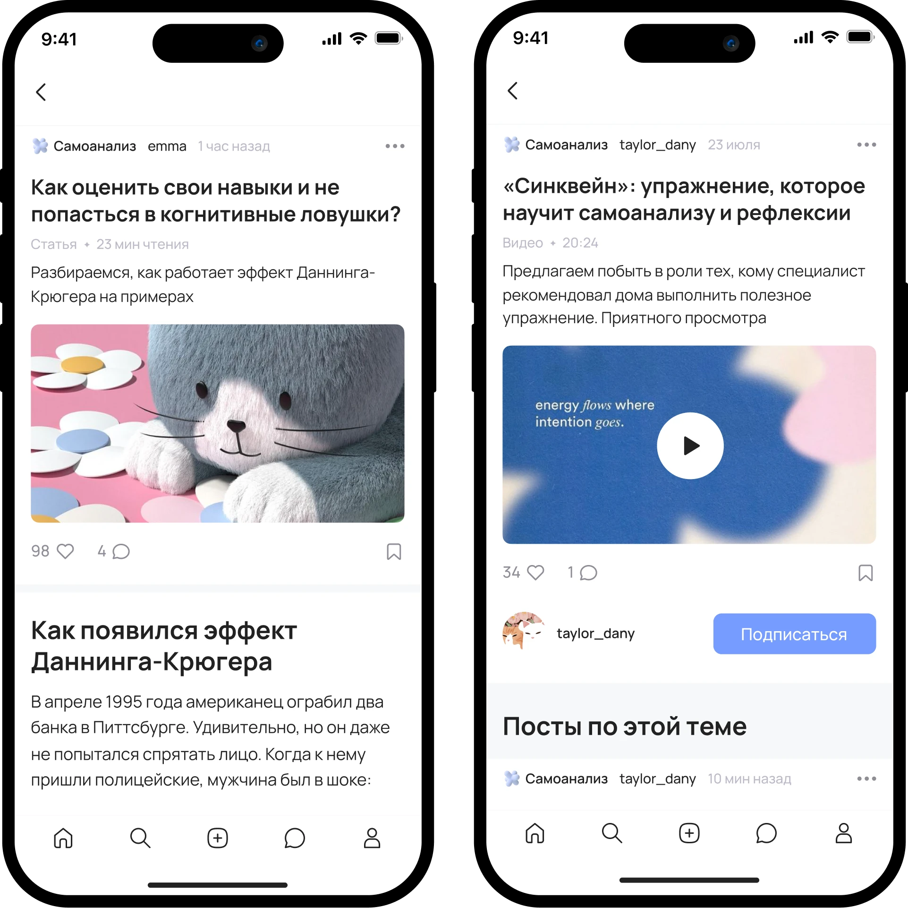
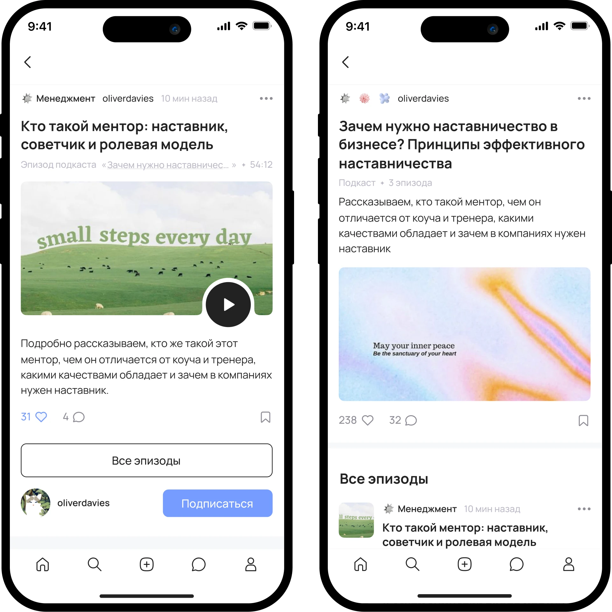
Авторам бывает сложно начать делиться опытом и продолжать публикации в условиях гонки за охватами.
Простой сценарий публикации и среда без акцента на алгоритмическом продвижении снизят барьер для авторов.
Упростила редактор и сократила количество действий, необходимых для публикации. В концепции Soft также нет акцента на кликбейте и погоне за охватами: в центре — тематический контент и обмен опытом.
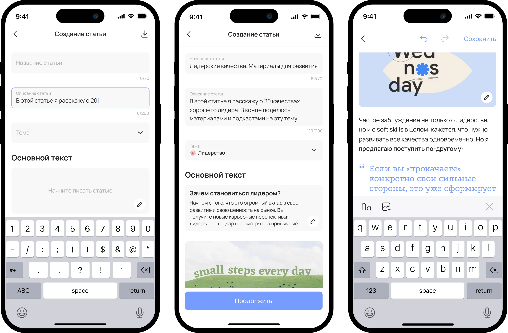
Еще добавила привычный формат сторис для коротких заметок. Можно предположить, что это тоже снизит порог вхождения.
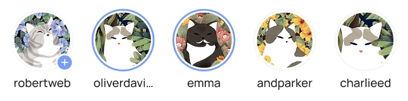
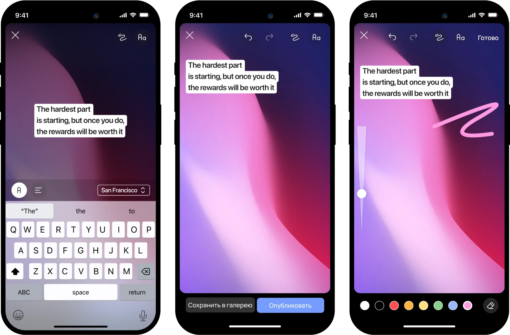
UI дизайн
Визуальный стиль отражает идею Slow Media — минимум шума, только контент по теме. Светлая палитра и мягкие 3d элементы не спорят с текстом.
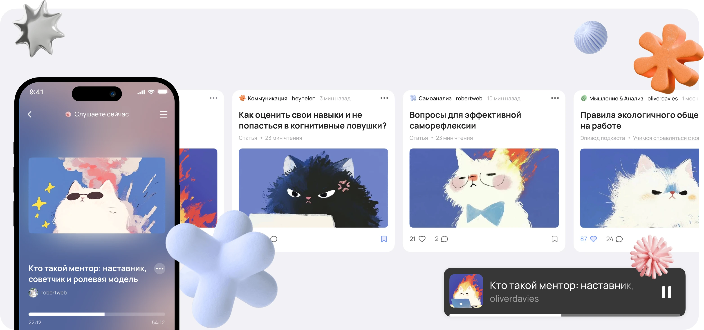
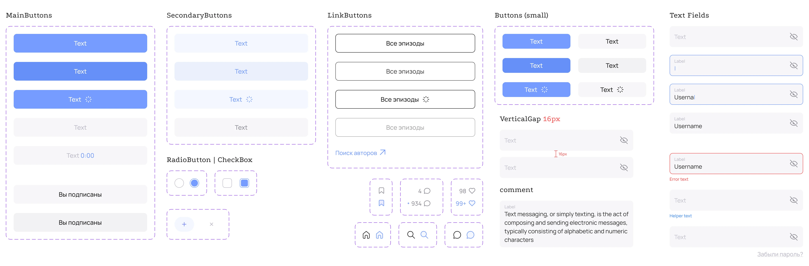
Как понять, что это работает
Soft — личный проект, поэтому замеров нет, но вот какие показатели могут показать, что идея работает.
Находят ли тему и доходят ли до конца материала, сколько подписок на темы и авторов появляется. Смотрим на взаимодействие с контентом.
Сколько авторов, начав пользоваться редактором, доходят до публикации — и публикуют ли повторно.
Возвращаются ли пользователи в течение недели и как часто.
Воспринимается ли Soft как спокойное пространство для развития или как очередная соцсеть — покажут показатели активности, можно обратиться к интервью и другим исследованиям.
Заключение
В Soft мне было интересно проектировать продукт сразу для двух сторон — читателей и авторов. У них разные задачи и ожидания, и важно было учесть обе стороны.
Если бы проектировала Soft сейчас, начала бы с карты сценариев и структуры MVP, чтобы быстрее сузить область и проверять решения на более раннем этапе.
Вернуться в портфолио